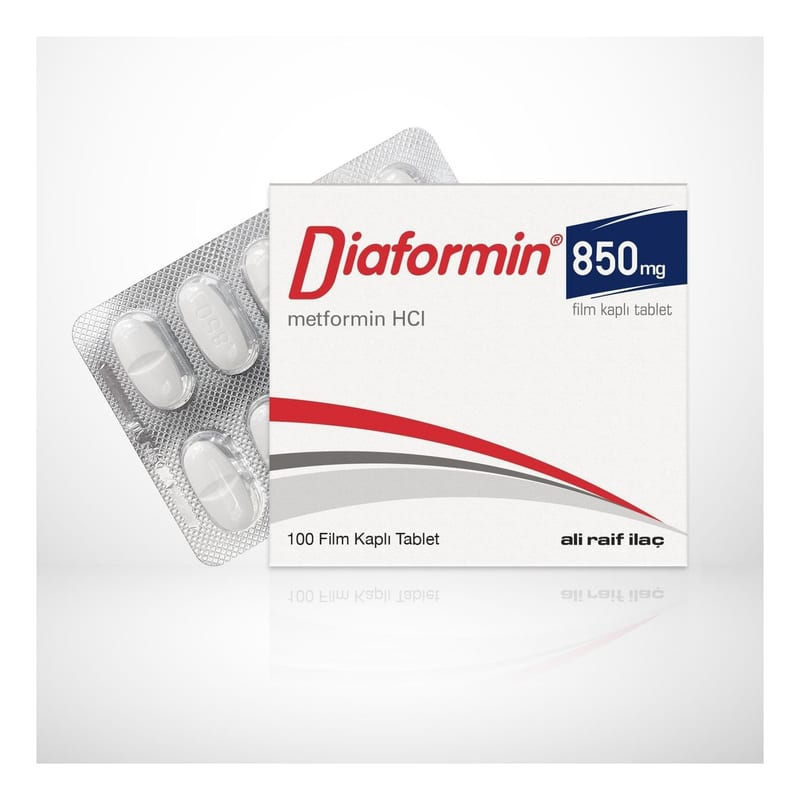

Diaformin 850 mg Film Kaplı Tablet, 100 Adet

Ne için kullanılır
KT · Bölüm 1• DİAFORMİN®şeker hastalığının tedavisinde kullanılan oral (ağızdan alınan) antidiyabetikler (biguanidler) olarak adlandırılan bir ilaç grubuna dahildir. • Her bir film kaplı tablet 850 mg metformin hidroklorür içeren 100 tabletlik blister ambalajlarda kullanıma sunulmuştur. • DİAFORMİN®beyaz renkte oblong, bir yüzü çentikli, bir yüzünde “850” yazısı bulunan film kaplı tablet (Çentiğin amacı yalnızca yutmak için tabletin kırılmasını kolaylaştırmaktır, tabletin eşit dozlara bölünmesi için değildir.). • Vücutta pankreas tarafından üretilen ve kan dolaşımına salgılanan bir hormon olan insülin, vücudunuzun kandaki glukozu (şeker) almasını sağlar. Vücudunuz glukozu enerji üretmek için kullanır veya ileride kullanmak için depolar. Eğer şeker hastalığınız varsa, ya pankreasınız yeterli insülini üretmiyor veya vücudunuz üretilen insülini uygun biçimde kullanamıyor demektir. Bu durum kanınızdaki glukoz düzeyinin yükselmesine neden olur. DİAFORMİN®kanınızdaki glukoz düzeyini mümkün olduğunca normal düzeye düşürmeye yardımcı olur.
• DİAFORMİN®, tek başına diyet ve egzersizin kan şekeri düzeyini kontrol etmede yetersiz kaldığı özellikle fazla kilolu tip 2 diyabetli hastaları (insülinden bağımsız diyabet olarak adlandırılan bir tür şeker hastalığı) tedavi etmede kullanılır. • Erişkinler, DİAFORMİN®’i tek başına veya şeker hastalığını tedavi etmede kullanılan diğer ilaçlar (ağızdan alınan ilaçlar veya insülin) ile birlikte kullanabilir. • 10 yaş ve üzeri çocuklar ve ergenler DİAFORMİN®’i tek başına veya insülinle birlikte kullanabilir. • Yalnız yaşam tarzı değişikliğinin glukoz değerlerini normal sınırlarda tutmada yetersiz kaldığı durumda, en az bir risk faktörü olan prediyabetik (şeker hastalığına meyilli) bireylerde tip 2 diabetes mellitusun önlenmesi.